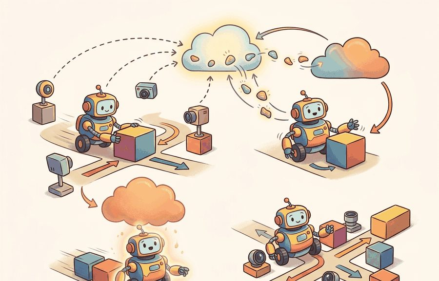
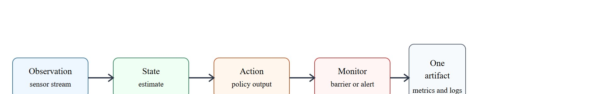
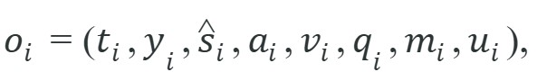

For Logging, monitoring, model updates, deployment quality is measured by the command stream, safety monitor state, and replayable evidence behind each command.
A Careful Control Loop

A warehouse robot clips a worker's arm at 2 a.m. The incident report lists "unexpected motion," but the team cannot reconstruct which sensor reading triggered it, whether the safety monitor fired, or whether a silent model update two days earlier changed the policy. Without structured logs, the robot is a black box after the fact. Embodied AI systems now operate in shared physical spaces where failures have irreversible consequences, yet most teams still treat logging as an afterthought. Here you will design the observability stack that captures every observation, state estimate, action, and monitor decision into a single replayable artifact, and you will build the drift detector that decides when accumulated evidence justifies a model update.
This section builds on the safety barrier and monitor concepts from section 54.4, and on the distribution-shift diagnostics covered in section 53.1. The observability tuple developed here feeds directly into the cross-robot evaluation protocols in section 52.6, where the same logged fields gate model promotion. These deployment logging practices recur in Part XII alongside continual learning pipelines, where replayable evidence distinguishes model drift from environment change.
Picture the 2 a.m. incident review from the opening: the robot stopped, a worker stepped back, and now five engineers stare at a dashboard that shows a single red latency spike and nothing else, with no way to tell whether perception, planning, control, timing, model drift, or operator context produced it.
In short: which artifact proves the claim afterward? For the full framing of that question, see section 55.2. Figure 55.4B traces the evidence contract that answers it: observation, state estimate, action, and monitor state all flow into a single result artifact on a shared time axis.
All metrics here share one script, one task panel, and one saved artifact. For the full rationale, see section 55.2.

Before reading on, guess: if a robot arm causes unexpected contact at 2 a.m. and your team has no per-step log, how many replays will it take before you can identify whether a model weight change or a latency spike caused the incident? Most teams discover the answer is never: without the right fields in the log, the causal chain is permanently unrecoverable.
A robot whose failure cannot be reconstructed from its logs did not fail in a recoverable way; it failed twice.
Observability is the difference between a repeatable incident review and a post hoc story. Figure 55.4A shows the continuous stack this section builds: the robot writes timestamped observation-action pairs to a ring buffer, where a ring buffer is a fixed-size log that overwrites its oldest entries once full, so the most recent window of steps is always retained without unbounded storage growth, anomaly detectors flag unexpected reward or latency spikes, and a model-update pipeline retrains when the drift metric crosses a threshold. This property is called the closed-loop evidence chain, and it requires that every decision in the loop leaves a timestamped, version-tagged record. The deployment trace should align observations, estimated state, chosen action, model version, latency, monitor transitions, and operator interventions on a shared time axis.
A useful observability tuple is

where $v_i$ is the version id, $q_i$ is queue and latency telemetry, $m_i$ is the monitor state, and $u_i$ is any human intervention. Model updates should be promoted only if a canary or shadow evaluation, where shadow evaluation runs the candidate model on the live observation stream but discards its actions so its predictions are scored without ever driving the robot, shows gain without violating retained-skill or safety thresholds.
The "drift metric" referenced above (Figure 55.4A) needs a concrete definition to be actionable: one common choice is the population stability index (PSI) between the deployment-time distribution of a chosen observation feature (or, for high-dimensional inputs, a pretrained embedding of that feature) and the training-time distribution of the same feature, computed over a rolling window of logged $y_i$ or $\hat s_i$ values. A typical operating convention treats PSI below 0.1 as no meaningful shift, between 0.1 and 0.25 as moderate shift worth a shadow evaluation, and above 0.25 as a shift large enough to block promotion and trigger a retraining review; teams adjust these cutoffs to their own risk tolerance rather than treating them as universal constants. The threshold crossing is what the model-update pipeline in Figure 55.4A checks before it retrains: PSI (or an equivalent embedding-distance statistic) is computed each evaluation interval from the logged tuple stream, compared against the chosen cutoff, and only a crossing opens the shadow-then-canary path described next.
The version id $v_i$ answers "which model produced this action?" without it, a performance regression cannot be assigned to a weight change versus a threshold change. The latency field $q_i$ is necessary because the same policy can succeed at 50 ms and fail at 200 ms when the robot's motion planner assumes near-real-time inputs. The monitor state $m_i$ records whether a safety barrier was active, armed, or bypassed; a near-miss that occurs while a monitor is disabled looks identical in the task-success column to one that occurred with full protection. The operator event $u_i$ captures human corrections, which are the ground truth for cases where the autonomous policy was about to violate a constraint the monitor did not catch. Omitting any of these four fields means that at least one class of incident is invisible in the logs.
So far: the observability tuple $o_i$ packages timestamp, observation, state estimate, action, model version, latency, monitor state, and operator event into one row; a drift metric such as PSI computed from that same logged stream is what decides when accumulated evidence crosses the threshold that opens a shadow evaluation.
The mechanism is observe, estimate, choose, constrain, execute, monitor, log, and review. Each verb has an owner in the deployment architecture and a field in the evaluation artifact.
Consider a specific case. Waymo's robotaxi fleet logs over 20 telemetry streams per vehicle, including perception confidence, planner latency, and safety arbiter state. All streams share a microsecond clock. When a disengagement occurs, engineers replay the ROS-style bag against the exact model version and monitor configuration active at that moment. Industry analyses of autonomous vehicle disengagement data (as of 2024) trace many disengagements to a mismatch between the sensor input distribution at deployment time and the training distribution, not to model errors on in-distribution inputs. That is why $v_i$ and $m_i$ must appear in the same log row. The version tag lets engineers isolate the rollout cohort and diagnose the shift. A disengagement (an event where the autonomous system hands control back to a human safety driver, typically because the policy encountered a situation it was not confident handling) is exactly the kind of incident this logging discipline is meant to make replayable. The cost of missing those fields follows a consistent pattern across the deployments we have reviewed, though the exact numbers vary by fleet and tooling: in practice, teams with complete tuple logging have typically resolved similar regressions in a handful of replays within a few hours, while teams missing the version and monitor fields have reported spending weeks without reaching a causal conclusion.
To see why each tuple field is load-bearing rather than decorative, walk through a concrete update that the abstract schema above must be able to diagnose.
Suppose a grasp update improves carton picks but causes unexpected failures on reflective packaging. A deployment trace must answer whether the change came from model weights, input distribution drift, calibration drift, or monitor-threshold edits.
required_fields = {
"timestamp", "obs_hash", "state_estimate", "action", "model_version",
"queue_age_ms", "monitor_state", "operator_event"
}
logged_fields = {
"timestamp", "obs_hash", "state_estimate", "action", "model_version",
"monitor_state",
}
# Coverage: unique logged fields that match required fields, divided by total required fields.
coverage = len(required_fields & logged_fields) / len(required_fields)
update_gate = {
"candidate_version": "grasp_v12",
"shadow_panel_passed": True,
"rollback_ready": True,
"diagnostic_coverage": coverage,
}
print(update_gate){'candidate_version': 'grasp_v12', 'shadow_panel_passed': True, 'rollback_ready': True, 'diagnostic_coverage': 0.75}Trace the coverage check with the two field sets above. The required set has 8 fields: timestamp, obs_hash, state_estimate, action, model_version, queue_age_ms, monitor_state, operator_event. The logged set has 6: timestamp, obs_hash, state_estimate, action, model_version, monitor_state. Intersection (fields in both) = {timestamp, obs_hash, state_estimate, action, model_version, monitor_state} = 6 fields. Coverage = 6 / 8 = 0.75. The two required fields that are missing are queue_age_ms and operator_event, which are exactly the timing-fault and human-correction signals. So the gate reports diagnostic_coverage = 0.75: shadow_panel_passed is True and rollback_ready is True, yet the update is still not fully observable, because a latency spike or an operator intervention would leave no trace in the log. Now suppose the team adds queue_age_ms: intersection becomes 7, coverage = 7 / 8 = 0.875, and only the operator_event blind spot remains.
The expected output is not just a green status. The key interpretation is that promotion is unjustified unless the update is both measurable and reversible. A candidate with improved task score but incomplete diagnostic coverage should still be rejected.
The algorithm below promotes a candidate to a "canary slice" as its next-to-last step; that term is defined here, before the algorithm, so the promotion step is unambiguous when you reach it. A canary slice is a small, designated subset of the physical fleet, typically one to three robots in a controlled zone, that runs the candidate model under full monitoring while the rest of the fleet remains on the production version. In embodied AI this boundary is not optional: a bad update that reaches every robot simultaneously cannot be recalled mid-motion, and physical damage to equipment or bystanders is irreversible within the failure window.
Without the boundary, a bad update across all 200 warehouse robots can trigger 200 concurrent failures before a single alert fires; the canary slice caps exposure at 3 robots while 197 stay on the known-good version. Mechanically, the deployment controller tags each robot with a cohort id stored alongside $v_i$. The canary cohort runs the new binary and keeps writing the full observability tuple. At every evaluation interval, a comparator queries both cohorts on the same metrics panel, computes the safety-event and task-success deltas, and blocks promotion if either exceeds threshold. Only once the canary evidence clears does the controller broadcast the binary fleet-wide.
Think of a head chef who tweaks a sauce recipe mid-service and gives it to one station to test before the kitchen switches over. The other stations keep cooking from the old recipe. Only after enough plates come back clean, no complaints, no returns, does the chef call out "new recipe for everyone." The canary slice works the same way: a small corner of the fleet proves the update is safe under real load while the rest of the fleet remains on the known-good version, and the gate does not open until the evidence from that corner is statistically convincing.
Production tracking tools such as DVC, MLflow, or Weights and Biases Artifacts replace the hand-built record with a few calls. For a full discussion, see section 55.2. In the update-gating context here, the key requirement is that whichever tool is used must capture the same diagnostic_coverage and rollback-readiness fields that drive the promotion decision.
Prometheus pull-scraping covers aggregate fleet metrics but does not automatically capture per-step queue_age_ms or per-action operator_event from ROS 2 topics. To avoid the 0.75 diagnostic coverage shown in Code Fragment 55.4.1, write a thin ROS 2 node that publishes those two fields to a custom topic and bridges it to Prometheus via the prometheus_ros exporter package. Without this bridge, latency outliers and human interventions are invisible to Prometheus dashboards even when they are present in the bag file, which means rollback decisions can be made on an incomplete signal.
With the tuple defined and the canary gate in place, the remaining work is procedural: turn those ideas into a fixed order of operations that a team can follow on every rollout.
An update that changes weights, thresholds, and data preprocessing simultaneously is practically unreviewable. Separate those moves or the logs will not support causal diagnosis.
A common assumption is that standard cloud-style monitoring tools (Prometheus dashboards, MLflow experiment tracking, or aggregate success-rate metrics) are sufficient for embodied AI deployment because they work well for web services. This is wrong in the embodied AI context because physical robot actions are time-coupled and irreversible: a latency spike that a web dashboard reports as a 95th-percentile outlier can correspond to a robot arm that has already caused contact damage before any alert fires. The correct mental model treats per-step telemetry (each observability tuple $o_i$) as the primary evidence artifact, not aggregate dashboards. Dashboards summarize; the tuple log is the ground truth that makes individual failure events reconstructable and causally diagnosable after the fact.
A manipulation team deploys a retrained grasp policy (Octo-Small, 300 M parameters, fine-tuned on 4 000 wrist-camera picks from an Open X-Embodiment subset) to a Franka Panda in a warehouse pick cell. The review folder contains: the ROS 2 bag at 500 Hz with wrist RGB and wrist F/T sensor streams, the model version hash, per-step queue_age_ms (target: under 80 ms at 12.5 Hz policy rate), monitor-state transitions from the force-torque barrier (threshold: 15 N contact), and a metric table with pick success, false-barrier-trigger rate, and 95th-percentile latency. On day 3, pick success drops from 91% to 74% on reflective shrink-wrap. The review finds that queue_age_ms spiked to 140 ms when the wrist camera exposure auto-adjusted under warehouse fluorescent lights, causing the Franka's joint-velocity feed-forward to desynchronize from the policy output. The F/T barrier fired 23 times in 4 hours, but all 23 events are marked as false triggers in the operator-event field because the arm recovered without contact. Without the latency field and the operator annotation in the same log row, the 74% success rate would have been attributed to model regression rather than a timing fault in the camera driver.
Waymo's robotaxi stack logs over 20 microsecond-aligned telemetry streams per vehicle (perception confidence, planner latency, safety-arbiter state) tagged with the exact model version active at each moment. When a disengagement occurs, engineers replay the recorded bag against that version and monitor configuration, which is precisely the version-plus-monitor field pairing described above. Without those two fields in the same log row, a regression could not be assigned to a weight change versus a distribution shift.
Online drift detection with foundation-model embeddings (2024-2025). Classical drift monitors compare marginal input statistics, but robot observations are high-dimensional and structured. Recent work embeds sensor streams through pretrained vision-language models and monitors drift in that latent space, catching semantic shifts (new object categories, lighting regimes) that pixel-level statistics miss. MIT CSAIL's RoboDrift project (2024) showed that cosine drift in Contrastive Language-Image Pretraining (CLIP) embeddings predicted policy degradation 40-60 steps earlier than reward-based monitors on manipulation benchmarks.
Causal logging for post-deployment auditing (2024-2026). Structured causal models applied to deployment logs let engineers distinguish three failure modes (model regression, environment shift, instrumentation fault) from a single incident trace rather than re-running ablations. Work from the Stanford CRFM group (2025, "Causal Incident Attribution for Deployed Robot Policies") formalizes the observability tuple as a structural causal model and provides identifiability conditions under which each failure class can be recovered from logged data alone, without additional rollouts.
Continual-update safety with rehearsal buffers (2024-2025). Policy updates that fine-tune on new data often erase safety-critical behaviors learned earlier, a problem called "safety forgetting." Google DeepMind's RoboForgetting study (2024) demonstrated that maintaining a compact rehearsal buffer of safety-relevant transitions and replaying it during each fine-tuning step reduces catastrophic safety forgetting by over 70% on contact-rich manipulation tasks without sacrificing new-task performance.
Open problem for PhD students. The three directions above each assume the robot's action space and sensor modalities remain fixed across updates. When a platform adds a new sensor (a wrist-mounted tactile array, a depth camera) mid-deployment, the existing observability tuple schema breaks: old and new log rows are no longer comparable, drift monitors trained on the old modality cannot transfer, and causal attribution requires a new structural model. No principled framework yet exists for schema-versioned continual monitoring that handles modality additions without a full reset of the monitoring stack. A student who solves this would unlock truly long-lived robot deployments with evolving hardware.
Can you name the metric contract, perturbation panel, monitor state, and artifact id for Logging, monitoring, model updates? If any field is missing, the claim is not yet audit-ready.
Logging, monitoring, model updates becomes operational when the metric is tied to a runtime interface. The interface names the sensor stream, state estimate, action representation, timing budget, safety or robustness monitor, and deployment artifact.
As with other sections in this module, each claim must stay separate: conceptual, systems, and evidence. For the full framing, see section 55.2. For logging and monitoring specifically, the evidence claim centers on whether logs capture enough state to reconstruct failures and whether monitors fire before a silent degradation reaches safety-critical behavior.
| Tool or Library | Role in Logging, monitoring, model updates |
|---|---|
| ROS 2 bags | Record time-aligned robot topics for replay and incident review. |
| Prometheus | Tracks fleet health metrics and alert thresholds. |
| artifact registry | Connects model updates with evaluation and rollback evidence. |
For Logging, monitoring, model updates, connect benchmark design, sim-to-real transfer, uncertainty, and safety barriers through the deployment artifact that will be checked before release.
Create a JSON or Parquet artifact for five rollouts of Logging, monitoring, model updates. Include fields for configuration, seed, perturbation, metric values, monitor state, and a short failure label. Then rerun the same panel with one changed policy setting and verify that both methods can be compared row by row.
When an update misbehaves, assign the failure to data drift, instrumentation gap, threshold drift, model regression, or release-process error. Then replay one canonical incident against both the previous and current version with identical telemetry collection.
For Logging, monitoring, model updates, schema strictness is cheaper than discovering a missing field during a moving-robot trial; require the log before comparing outcomes.
Logging, monitoring, model updates is valuable when it changes the closed-loop decision and leaves behind evidence that another builder can audit.
Design a same-artifact evaluation for this section. Specify the environment, rollout panel, seed plan, metric fields, monitor fields, one perturbation, and one rollback or recovery rule.
Quigley, M. et al. ROS: an open-source Robot Operating System. ICRA Workshop, 2009.
Use for the robotics middleware lineage behind nodes, topics, services, bags, and deployment boundaries.
OpenTelemetry project documentation. https://opentelemetry.io/docs/
Use for tracing, metrics, and logs when robot deployment evidence must connect software events to runtime behavior.
Beginner (weekend): ROS 2 observability tuple logger for a simulated arm. Build a ROS 2 node in Gymnasium (or PyBullet) that records the full observability tuple (timestamp, observation hash, action, model version, queue age, monitor state, operator event) to a Parquet file during a pick-and-place task. The key challenge is bridging the per-step tuple fields from ROS 2 topics into a single row-aligned artifact without introducing latency that distorts the queue-age measurement itself.
Intermediate (1-2 weeks): Canary deployment controller for a LeRobot manipulation policy. Using LeRobot with a MuJoCo or Isaac Lab backend, implement a shadow-then-canary promotion pipeline that trains two policy variants, runs them in parallel on separate robot instances, computes pick-success and false-barrier-trigger rates from a shared metrics panel, and blocks promotion if either metric regresses beyond a threshold. The key challenge is synchronizing the evaluation clock across two concurrent simulation environments so that the panel comparison is causally valid and not confounded by episode-length variance.
After establishing the logging and monitoring stack, Section 55.5: Failure recovery, security, maintenance extends the same artifact schema to cover recovery procedures, security threat models, and long-term maintenance protocols, so that each failure mode is traceable and auditable from the same evidence chain built here.